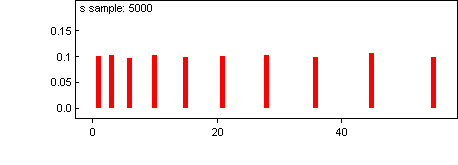

![[random-sets0]](random-sets0.bmp) Random sets: making the size of a set into a
Random sets: making the size of a set into a random quantity
Suppose we want to find the distribution of the sum of the first K integers, where K is a random quantity. We shall assume K has a uniform distribution on 1 to 10 here.
model
{
for (i in 1:10) {
p[i] <- 1 / 10 # set up prior for K
x[i] <- i # set up array of integers
}
K ~ dcat(p[]) # sample K from its prior
for (i in 1:10) {
# determine which of the x[i]'s are to be summed
xtosum[i] <- x[i] * step(K - i + 0.01)
}
s <- sum(xtosum[])
}
